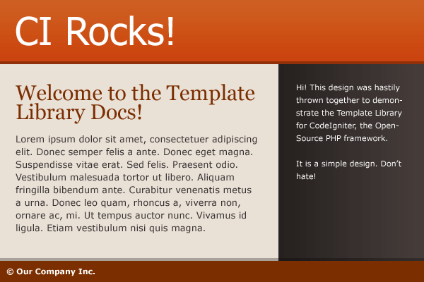

A Guide to Using Template
Looking for documentation covering how to install Template? Head over to Getting Started. Or, learn more about the project in the Introduction.
User Guide Topics
- Configuring Template and Defining Regions
- Creating the Master Template
- Writing to Regions
- Dynamically Manipulating Template
- Using Template Parsers
- Additional Utilities
I. Configuration
Template uses its own configuration file template.php. This file must be placed inside the config folder, alongside config.php, database.php, autoload.php, et. al.
Open config/template.php in a text editor and you'll notice that, much like CodeIgniter's config files, all configurations for Template are stored in a singly array, except ours is stored in the $template variable. Also, much like config/database.php, Template lets you define templates in "groups," which allows you to use and switch between multiple templates in your application.
Setting the Default Template
Template requires that you have at least one active template group set with a master template defined.
$template['active_group'] = 'default';
$template['default']['template'] = 'template.php';
For $template['default']['template'], indicate the filename of your master template in the views folder. Typically this file will contain a full HTML or XML skeleton that outputs your pre-defined regions. Details of this file will be outlined below.
Note: Template will error if this file cannot be found in your views folder. This can also be a relative path if you desire to nest your master template in folders inside views.
Defining Regions
What are regions? Regions are places within the template where your content may land. They are defined in the ['regions'] array following an easy-to-understand prototype. You may include default markup, wrappers and attributes here (not recommended), or you can simply define region variables that you intend to use.
A simple regions array:
$template['default']['regions'] = array(
'header',
'content',
'footer',
);
exposes $header, $content, and $footer regions to be written to by your application and placed in your master template.
Note: Region keys must gracefully translate into variables (no spaces or dashes, etc).
Regions can be extended to include default contents and wrapping markup if desired. To do this, turn your region keys into multidimensional arrays with the following possible indeces:
| Index | Instructions |
|---|---|
| content | Must be an array! Use to set default region content |
| name | A string to identify the region, beyond how it is defined by the key. |
| wrapper | An HTML element to wrap the region contents in. (We recommend doing this in your template file.) |
| attributes | Multidimensional array defining HTML attributes of the wrapper. (We recommend doing this in your template file.) |
For example:
$template['default']['regions'] = array(
'header' => array(
'content' => array('<h1>Welcome</h1>','<p>Hello World</p>'),
'name' => 'Page Header',
'wrapper' => '<div>',
'attributes' => array('id' => 'header', 'class' => 'clearfix')
)
);
Would result in <div id="header" class="clearfix"><h1>Welcome</h1><p>Hello World</p></div> when finally rendered by Template.
Defining Parsers
By default, Template will use CodeIgniter's Template Parser class. To use an additional template parser, set ['parser'] and ['parser_method'] variables in your template group accordingly:
$template['default']['parser'] = 'smarty_parser';
// Template will call smarty_parser::parse()
$template['default']['parser'] = 'frog_parser';
$template['default']['parser_method'] = 'frog';
// Template will call frog_parser::frog()
For ['parser'] you will provide the name of the parser class located in application/libraries, and, if necessary, the method that is responsible for handling the request will be supplied to ['parser_method'] (if other than "parse()").
Finally, to have Template use a parser for rendering your regions, rather than Views, set the ['parse_template'] variable to TRUE:
$template['default']['parse_template'] = TRUE;
Parser classes and methods can be altered at any time throughout your application. See the Using Template Parsers section for more information.
II. Creating the Master Template
Let's start using Template by creating a master template. We've got a basic design that's going to fulfill 95% of page views for our imaginary site:
 Fig. 1 A simple two-column design with a header and a footer
Based on this design, we can define a few pieces that work well as regions—parts of the design that might change per page. So, let's configure config/template.php with the following regions:
$template['default']['regions'] = array(
'header',
'title',
'content',
'sidebar',
'footer',
);
It looks like our header and footer regions will have the same content on just about every page. Keeping them as regions will make our template flexible, but we can also define default content for these regions, which we can either append or overwrite from our code. We'll add these lines of code to the bottom of config/template.php:
$template['default']['regions']['header'] = array('content' => array('<h1>CI Rocks!</h1>'));
$template['default']['regions']['footer'] = array('content' => array('<p id="copyright">© Our Company Inc.</p>'));
Finally! We're all set. Let's code our master template file at views/template.php, outputting our regions in the appropriate places: (For the sake of brevity, this example will be poorly structured HTML and make use of PHP short tags.)
That's all! For now at least. Continue on to see how to make use of this template and regions throughout your application's Controllers.
III. Writing to Regions
With our regions defined and the basic structure of our template in place, we can start writing to our template from our controller. But first, let's see how to output our final compiled template.
$this->template->render($region = NULL, $buffer = FALSE, $parse = FALSE)
This is the method that, by default, outputs our rendered template to the browser or other client. This method should be the last thing called from any public Controller methods that make use of the Template Libary.
To only render a specific region's contents, pass the region name in the first parameter. When a valid region name is supplied, render() will always only return the rendered string, and parsing does not apply.
$title = $this->template->render('title');
echo $title;
To store an entire rendered template in a variable without outputing it to the client, pass TRUE in the second argument:
$this->template->set_template('email');
$email_message = $this->template->render('', TRUE);
$this->email->message($email_message);
$this->email->send();
The third $parse argument instructs Template to either use the defined parser class or Views when rendering the regions. See Using Template Parsers for more information.
Let's start with a basic controller called 'page' that, by default, renders our template as is by only calling $this->template->render():
Now, when we load this page in the browser, we see:
 Fig. 2 Our template is loaded with only default content appearing.
Fig. 2 Our template is loaded with only default content appearing.
As you can see, the content, title and sidebar regions are showing empty because we've yet to write content to those regions, and we didn't configure any default content in config/template.php. Additionally, our validator is probably screaming at us because we've got an empty <h2> tag where $title should be. Let's take care of that.
$this->template->write($region, $content, $overwrite = FALSE)
Template's write() method is the most basic way of writing content to a region. At a minimum, this method must be passed:
- $region: a string defining to which region we wish to write, and
- $content: a string containing the content we wish to write.
The default behavior of the write() method is to append $content to what has already been written to the given $region, but we can alter this behavior and overwrite all existing region contents by passing TRUE as a third argument.
$this->template->write('content', 'You one ');
$this->template->write('content', 'bad mother...');
// $content region = "You one bad mother..."
$this->template->write('content', "Shut'yo mouth!", TRUE);
// $content region = "Shut'yo mouth!"
$this->template->write_view($region, $view_file, $view_data, $overwrite = FALSE)
Using the write() method, we could load the result of a View into a variable and then write it to a region in our template, but Template provides the write_view() method to expedite the process and save you from writing at least one extra line of code per use!
Like write(), we define the region we wish to write to in the first argument of write_view(). For the second and third arguments, we pass a view file (with or without the ".php" extension) and optionally pass a data array to our view, respectively, just as is typically done with CI's $this->load->view() method. Again, if we wish to overwrite any existing content in the region, we can pass TRUE as a fourth argument.
$data = array('name' => 'John Smith', 'birthdate' => '11/15/1950');
$this->template->write_view('content', 'user/profile', $data, TRUE);
/* Template loads the views/user/profile.php view with the $data array passed in
and writes the result to the $content region, overwriting any previous content in the region */
Let's use these two methods to fill out our template:
Now, when we load up our Page controller in the browser, we see our completed Web page:
Fig. 3 Avoiding messy code and calling views from within views, we've filled out our template with just a few calls to Template methods in our Page controller.
Cascading Views
A core principle of the Template library is flexibility, so the write_view() method lets you suggest other View files to load if the defualt View file you passed in the first argument doesn't exist. To suggest other View files for Template to use, pass them discretely, starting with the 5th argument:
$data['posts'] = $this->blog->get_recent(5);
$this->template->write_view('content', 'blog/front', $data, FALSE, 'blog/posts');
If this was a blog application, using this method lets us create a View file at views/blog/front.php to format blog posts distinctly when they appear on the front page, or opt-out and let our standard views/blog/posts.php handle the output. We could suggest more fallbacks if needed in the 6th, 7th, 8th arguments, and so on.
What happens if I write to a region that I hadn't previously defined?
Template will show an error if you attempt to write to a region that was not previously defined in the config file or otherwise. See how to manipulate templates and template regions in the following section, "Dynamically Manipulating Template."
"My template uses other variables that aren't necessarily regions. How do I supply those within Template?"
You most likely will use variables in your main template that aren't content regions. For example, you might have a $body_id variable that you apply to the <body> element that you use in your CSS to apply styles to specific pages. This certainly could be a region, but it wouldn't quite fit the metaphor.
To supply these variables to your master template, use CodeIgniter's $this->load->vars() mechanism.
Note: Unfortunately, I do not believe the $this->load->vars() function works for most or any parsers. Creating regions for these variables or using the Config class might be the only viable solutions.
IV. Dynamically Manipulating Template
The whole idea of Template is to improve the interface between your application's business logic and presentational markup by providing a very flexible wrapper to CI's Views implementation. Consider an application that required two or more markedly different templates for different pages or sections (like a blog with a main HTML template and RSS feed template). Or, consider if a plugin architecture was to allow for making components available to all your pages (like a User plugin that provides a login form). Rather than limiting it to using the regions defined in your configuration, a plugin should be able to dynamically provide its own regions for writing. These methods allow for these and other development scenarios.
$this->template->set_template($group)
The set_template() method is how you switch between different template groups defined in your config/template.php file. Template will throw an error if you attempt to set a template group not previously defined or dynamically added.
$this->template->set_template('rss');
// Template will now use the master template and regions from the $template['rss'] group
Tip: Use this method in Controller constructors where the entire Controller uses a separate template.
$this->template->add_template($group, $template, $switch)
Not all templates must be defined in config/template.php. The add_template() method allows templates to be dynamically added, and you can pass TRUE as a third parameter to switch to the added template.
$rss['template'] = 'rss.php';
$rss['regions'] = array('name', 'items');
$this->template->add_template('rss', $rss, TRUE);
// Template will now use the master template and regions from the supplied $rss template group
configuration
- $group is the handle that would be needed if this template was later invoked by the set_template() method
- $template is the properly formed template group configuration array, defining the master template and available regions
- $switch can be set to TRUE to automatically invoke this new template group settings
$this->template->set_master_template($filename)
In some cases you might only want to change the master template file of the current template configuration. This is useful for when multiple templates must share common regions and parser settings.
To swap the master template, call set_master_template() with the desired path and filename of the new master template:
$theme = 'lovely_butterflies';
$this->template->set_master_template('themes/'. $theme .'/template.php');
Template will now render the template file located at application/views/themes/lovely_butterfiles/template.php
The ".php" extension is not necessarily required. Template will use the EXT constant if one is not supplied.
$this->template->add_region($name, $settings = array())
The add_region() method allows one to dynamically add regions for writing. At a minimum, a $name must be supplied to identify the region. Optionally, a $settings array can be passed in to provide default content, wrappers and attributes.
$this->template->add_region('user_login');
$this->template->write_view('user_login', 'user/login_block');
Template will throw an error if the region defined by $name already exists.
V. Using Template Parsers
In addition to interfacing with Views, Template provides a standard way to use template parsers when writing data to regions or rendering your master template. Although Template uses CodeIgniter's Template Parser class by default, one can provide any parser or engine (like Smarty) for Template to use.
$this->template->parse_view($region, $view_file, $view_data, $overwrite = FALSE)
To use CodeIgniter's Template Parser class, or an alternative parser like Smarty, to parse a View, use the parse_view() method. parse_view() works identically to write_view(), so you can also discretely suggest other Views to parse, starting with the 5th argument.
$data = array(
'blog_title' => 'My Blog Title',
'blog_heading' => 'My Blog Heading'
);
$this->template->parse_view('content', 'blog_template', $data);
Introducing Additional Parsers
Method 1: Set parser instructions in config/template.php
You can add instructions to your template group configurations, telling template what parser class and method to use. Template will attempt to use the parse() method of the given ['parser'] unless a ['parser_method'] is supplied:
$template['default']['parser'] = 'smarty_parser';
// Template will call smarty_parser::parse()
$template['default']['parser'] = 'frog_parser';
$template['default']['parser_method'] = 'frog';
// Template will call frog_parser::frog()
Method 2: Set parser instructions dynamically
Alternatively, you can dynamically instruct Template to use a parser class and method with the set_parser() method:
$this->template->set_parser('smarty_parser');
// Template will call smarty_parser::parse()
$this->template->set_parser('frog_parser', 'frog');
// Template will call frog_parser::frog()
Anatomy of a Parser Class
A parser class is simply a CodeIgniter Library that provides a method which parses a given template file with the supplied data and returns its output. Let's write our own very simple parser class to see how it works:
We'll save this file as a library at application/libraries/Lame_parser.php. As you can see, a parser class' parser method will be passed $template, the template file to be parsed, and $data, an array of key/value pairs used in parsing the given template's pseudo code. Also note that a parser method should ALWAYS return the result of the parsed template and not echo it. Template will always supply a 3rd argument as TRUE to instruct some parser methods to do this by default.
Now, let's configure a template to use our lame parser:
$tpl = array(
'template' => 'lame_template.php'
);
$this->template->add_template('lame', $tpl, TRUE);
$this->template->add_region('content');
$this->template->set_parser('lame_parser');
$this->template->parse_view('content', 'templates/lamer', array('stuff' => 'things'));
echo $this->template->render('content'); // Just render the 'content' region
Running the above results in This parser is lame. Obviously a parser is actually going do more, but this shows the process: The returned value of Lame_parser::parse() is written to our 'content' region.
Using the Smarty Template Engine as a Parser
Most people who don't use CI's Template Parser class are going to want to use the popular Smarty Template Engine. Luckily, the CI community has already ported a Smarty_parser library that fits right in to Template's parser interface. Follow this quick guide to begin using Smarty with Template:
- Follow the directions for installing the Smarty_parser library found here: Yet Another Smarty Thread
- Configure your template group to use the Smarty_parser library:
$template['default']['template'] = 'template.tpl';
$template['default']['regions'] = array('header', 'content', 'footer');
$template['default']['parser'] = 'smarty_parser';
$template['default']['parse_template'] = TRUE;
That's ALL! Template will now use the Smarty_parser library when the parse_view() method is employed, and your master template will be parsed by Smarty as well.
NOTE: There is no guarantee that the third-party Smarty_parser library will work 100% as advertised. Please raise issues in the appropriate CodeIgniter forum threads.
Parsing the Master Template
By default, Template will render your master template as if it were a View, but you can use a parser class to render it instead. There are 3 ways you can instruct Template to parse the master template:
- In config/template.php, set ['parse_template']
to TRUE for the necessary template group configuration:
$template['default']['parse_template'] = TRUE; - Dynamically set the parse_template property of the Template class to TRUE, then
render the template:
$this->template->parse_template = TRUE;
$this->template->render(); - Supply a third parameter as TRUE when calling render(). Remember to pass the first two arguments
properly:
$this->template->render(NULL, FALSE, TRUE);
VI. Additional Utilities
CSS defines the style of your HTML template and JavaScript defines its behavior, so I've included two methods to easily include these important assets on-demand.
$this->template->add_js($script, $type = 'import', $defer = FALSE)
- $script: Depending on the value of the $type argument, either a path to the JavaScript file (including file extension) relative to $config['base_path'] or inline JavaScript code.
- $type: Either 'import' or 'embed' Use 'import' to include an external JavaScript file or 'embed' to wrap JavaScript code in <script> tags.
- $defer: Set to TRUE to include defer="defer" declaration on script tag.
$this->template->add_js('js/jquery.js');
$this->template->add_js('alert("Hello!");', 'embed');
Echo $_scripts in your template (preferably in the <head> section) to utilize JavaScript added via this method.
$this->template->add_css($style, $type = 'link', $media = FALSE)
- $style: Depending on the value of the $type argument, either a path to the CSS file (including file extension) relative to $config['base_path'] or inline CSS code.
- $type: Either 'link', 'import' or 'embed' Use 'link' to include an external CSS file, 'import' to include an external CSS file via the @import command, or 'embed' to wrap inline CSS code in <style> tags.
- $media: Set media declaration, like 'all', 'screen', 'print', 'handheld', etc.
$this->template->add_css('css/main.css');
$this->template->add_css('#logo {display: block}', 'embed', 'print');
Echo $_styles in your template (preferably in the <head> section) to utilize CSS added via this method.
Note: The add_css() and add_js() methods do not verify that the requested assets exist on the server's filesystem. Remember to pass file paths relative to the path defined for $config['base_path']. Both methods will return FALSE if an invalid $type argument is supplied.
More utilities, like setting META tags, language declarations, and other goodies typically found in an HTML document's HEAD will be considered for future releases. You can, of course, define regions to house these types of things in the meantime.